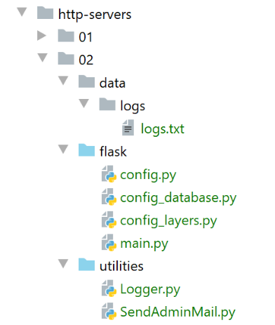
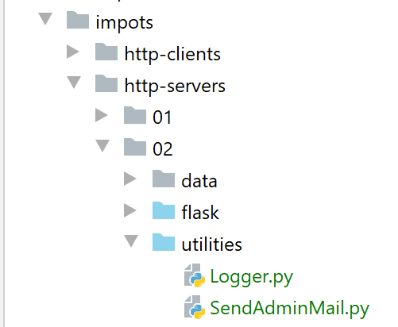
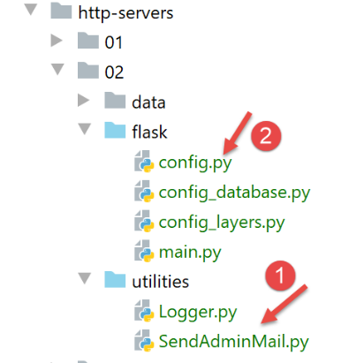
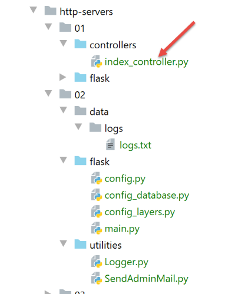
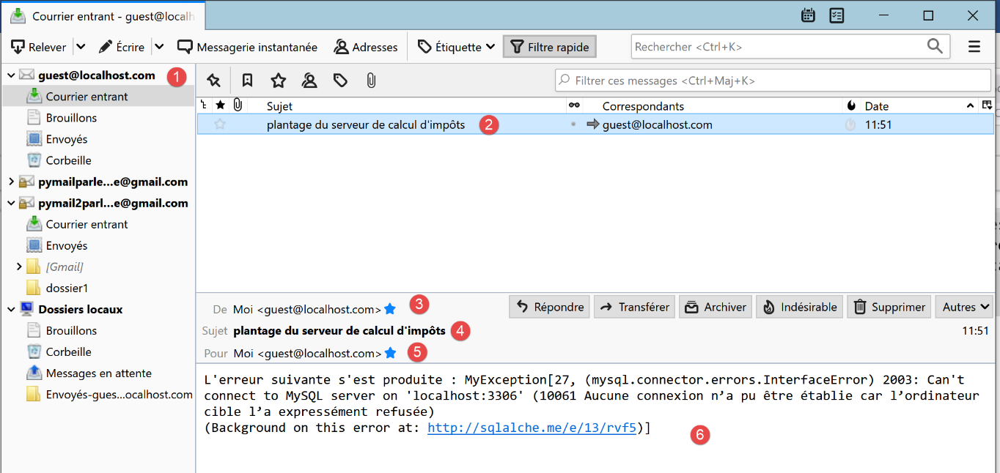
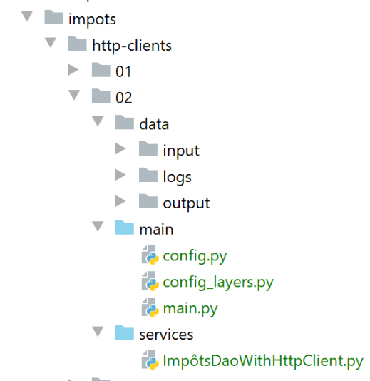
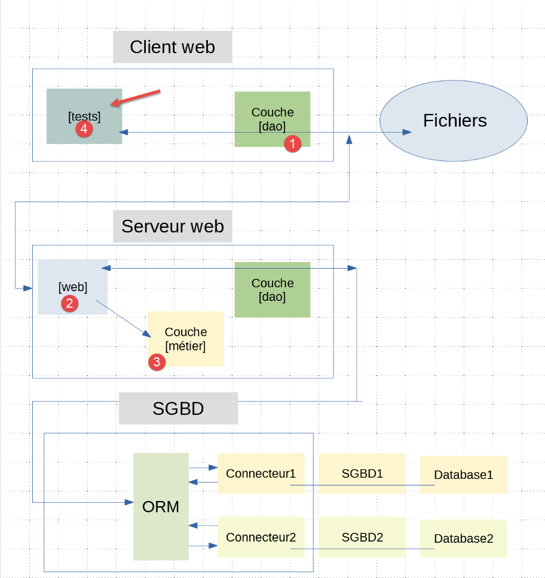
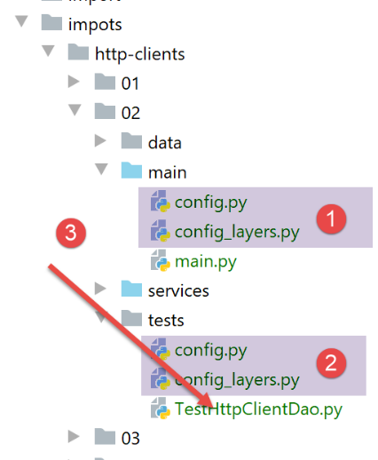

24. Exercice d’application : version 7
24.1. Introduction
La version 7 de l’application de calcul de l’impôt est identique à la version 6 aux détails près suivants :
- le client web va lancer simultanément plusieurs requêtes HTTP. Dans la version précédente ces requêtes étaient lancées séquentiellement. Le serveur ne traitait alors à tout moment qu’une unique requête ;
- le serveur sera multi-threadé : il pourra traiter plusieurs requêtes simultanément ;
- pour suivre l’exécution de ces requêtes, on va doter le serveur web d’un logueur avec lequel on loguera dans un fichier texte les moments importants du traitement des requêtes ;
- le serveur enverra un mail à l’administrateur de l’application lorsqu’il rencontrera un problème qui l’empêchera de se lancer, typiquement un problème avec la base de données associée au serveur web ; L’architecture de l’application ne change pas :

L’arborescence des scripts est la suivante :

Le dossier [http-servers/02] est d’abord obtenue par recopie du dossier [http-servers/01]. On y fait ensuite des modifications.
24.2. Les utilitaires

24.2.1. La classe [Logger]
La classe [Logger] va permettre de loguer dans un fichier texte certaines actions du serveur web :
- lignes 10-11 : on définit un attribut de classe. Un attribut de classe est une propriété partagée par toutes les instances de la classe. On la référence par la notation [Classe.attribut_de_classe] (lignes 30, 39). L’attribut de classe [verrou] sera un objet de synchronisation pour tous les threads exécutant le code des lignes 31-36 ;
- lignes 14-19 : le constructeur reçoit le nom absolu du fichier de logs. Ce fichier est alors ouvert et le descripteur de fichier récupéré est mémorisé dans la classe ;
- ligne 17 : le fichier de logs est ouvert en mode ‘append’ (a). Chaque ligne écrite le sera à la fin du fichier ;
- lignes 22-39 : la méthode [write] permet d’écrire dans le fichier de logs un message passé en paramètre. A celui-ci sont accolées deux informations :
- ligne 24 : la date du jour ;
- ligne 25 : l’heure du moment ;
- ligne 27 : le nom du thread qui écrit le log. Il ne faut pas oublier ici qu’une application web sert plusieurs utilisateurs à la fois. Toute requête se voit attribuer un thread pour l’exécuter. Si ce thread est mis en pause, typiquement pour une opération d’ entrée / sortie (réseau, fichiers, base de données), alors le processeur sera donné à un autre thread. A cause de ces interruptions possibles, on ne peut pas être sûrs qu’un thread va réussir à écrire une ligne dans le fichier de logs sans être interrompu. On risque alors de voir des logs de deux threads différents se mélanger. Le risque est faible, peut-être même nul, mais on a néanmoins décidé de montrer comment synchroniser l’accès de deux threads à une ressource commune, ici le fichier de logs ;
- ligne 30 : avant d’écrire, le thread demande la clé de la porte d’entrée. La clé demandée est celle créée ligne 11. Elle est effectivement unique : un attribut de classe est unique pour toutes les instances de la classe ;
- au temps T1, un thread Thread1 obtient la clé. Il peut alors exécuter la ligne 33 ;
- au temps T2, le thread Thread1 est mis en pause avant même d’avoir terminé l’écriture du log ;
- au temps T3, le thread Thread2 qui a obtenu le processeur doit lui aussi écrire un log. Il arrive ainsi à la ligne 30 où il demande la clé de la porte d’entrée. On lui répond qu’un autre thread l’a déjà. Il est alors automatiquement mis en pause. Il en sera ainsi de tous les threads qui demanderont cette clé ;
- au temps T4, le thread Thread1 qui avait été mis en pause retrouve le processeur. Il termine alors l’écriture du log ;
- lignes 32-36 : l’écriture dans le fichier de logs se fait en deux temps :
- ligne 33 : le descripteur de fichier obtenu ligne 17 travaille avec un buffer. L’opération [write] de la ligne 33 écrit dans ce buffer mais pas directement dans le fichier. Le buffer est ensuite vidé dans le fichier dans certaines conditions :
- le buffer est plein ;
- le descripteur de fichier subit une opération [close] ou [flush] ;
- ligne 36 : on force l’écriture de la ligne de log dans le fichier. On fait cela parce qu’on veut voir s’intercaler entre eux les logs des différents threads. Si on ne fait pas ça, les logs d’un thread seront tous écrits en même temps lors de la fermeture du descripteur, ligne 45. Il serait alors beaucoup plus difficile de voir que certains threads ont été arrêtés : il faudrait regarder les heures dans les logs ;
- ligne 39 : le thread Thread1 rend la clé qu’on lui avait donnée. Elle va pouvoir être donnée à un autre thread ;
- ligne 22 : la méthode [write] est donc synchronisée : un seul thread à la fois écrit dans le fichier de logs. La clé du dispositif est la ligne 30 : quoiqu’il arrive, seul un thread récupère la clé de passage à la ligne suivante. Il la garde tant qu’il ne la rend pas (ligne 39) ;
- lignes 41-45 : la méthode [close] permet de libérer les ressources allouées au descripteur du fichier de logs ; Les logs écrits dans le fichier de logs auront l’allure suivante :
24.2.2. La classe [SendAdminMail]
La classe [SendAminMail] permet d’envoyer un message à l’administrateur de l’application lorsque celle-ci ‘plante’.

La classe [SendAdminMail] est configurée dans le script [config] [2] de la façon suivante :
La classe [SendAminMail] reçoit le dictionnaire des lignes 2-13 ainsi que la configuration de l’envoi du mail. La classe est la suivante :
- lignes 24-54 : on retrouve le code déjà étudié dans l’exemple |smtp/02| ;
- ligne 20 : on récupère la référence d’un logueur. Celui-ci est utilisé aux lignes 45 et 49 ;
24.3. Le serveur web
24.3.1. Configuration
La configuration du serveur est très semblable à celle du serveur étudié précédemment. Seul le fichier [config.py] évolue légèrement :
- lignes 40-66 : on ajoute dans le dictionnaire de configuration du serveur, les éléments concernant le logueur (ligne 49) et celles concernant l’envoi d’un mail d’alerte à l’administrateur de l’application (lignes 51-63) ;
- ligne 65 : pour mieux voir les threads en action on va imposer à certains de s’arrêter. [sleep_time] est la durée de l’arrêt exprimée en secondes ;
- lignes 27-28 : on notera qu’on utilise le contrôleur [index_controller] de la version 6 précédente ;
24.3.2. Le script principal [main]
Le script principal [main] est le suivant :
1 2 3 4 5 6 7 8 9 10 11 12 13 14 15 16 17 18 19 20 21 22 23 24 25 26 27 28 29 30 31 32 33 34 35 36 37 38 39 40 41 42 43 44 45 46 47 48 49 50 51 52 53 54 55 56 57 58 59 60 61 62 63 64 65 66 67 68 69 70 71 72 73 74 75 76 77 78 79 80 81 82 83 84 85 86 87 88 89 90 91 92 93 94 95 96 97 98 99 100 101 102 103 104 105 106 107 108 109 110 111 112 113 114 115 116 117 118 119 120 121 122 | |
- lignes 1-10 : le script attend un paramètre [mysql / pgres] qui lui indique le SGBD à utiliser ;
- lignes 12-14 : l’application est configurée (Python Path, couches, base de données) ;
- lignes 16-28 : les dépendances nécessaires à l’application ;
- lignes 30-43 : gestion de l’authentification ;
- lignes 46-51 : une fonction qui envoie un mail à l’administrateur de l’application ;
- la fonction attend deux paramètres :
- config : un dictionnaire ayant les clés [adminMail] et [logger] ;
- le message à envoyer ;
- lignes 49-50 : on prépare la configuration de l’envoi ;
- on envoie le mail ;
- lignes 54-74 : on vérifie la présence du fichier de logs ;
- ligne 70-74 : si on n’a pas réussi à ouvrir le fichier de logs, on envoie un mail à l’administrateur et on s’arrête ;
- lignes 76-79 : on logue le démarrage du serveur ;
- lignes 81-98 : on va chercher les données de l’administration fiscale en base de données ;
- lignes 88-98 : si on n’a pas réussi à obtenir ces données, on logue l’erreur aussi bien sur la console que dans le fichier de logs ;
- lignes 100-101 : le thread principal ne fera plus de logs (les threads créés n’utiliseront pas le même descripteur de fichier) ;
- lignes 103-105 : si on n’a pas pu se connecter à la base de données, on s’arrête ;
- ligne 122 : on lance le serveur en mode multithreadé ; La fonction [index] (ligne 114) est la suivante :
- ligne 4 : la fonction exécutée lorsqu’un utilisateur demande l’URL /. Parce que le serveur est multi-threadé (ligne 112), un thread va être créé pour exécuter la fonction. Ce thread peut à tout moment être interrompu et mis en pause pour reprendre son exécution un peu plus tard. Il faut toujours se souvenir de ce point lorsque le code accède à une ressource partagée par tous les threads. Une telle ressource est ici le fichier de logs : tous les threads écrivent dedans ;
- ligne 8 : on crée une instance de logueur. Donc tous les threads auront une instance différence du logueur. Néanmoins tous ces logueurs pointent sur le même fichier de logs. Il est quand même important de noter que lorsqu’un thread ferme son logueur, cela n’a pas d’incidence sur les logueurs des autres threads ;
- lignes 9-12 : on mémorise le logueur dans le dictionnaire [config] de l’application associé à une clé portant le nom du thread. Ainsi s’il y a n threads exécutés simultanément, on aura la création de n entrées dans le dictionnaire [config]. [config] est une ressource partagée entre tous les threads. Il peut donc y avoir un besoin de synchronisation. J’ai fait ici une hypothèse. J’ai supposé que si deux threads créaient simultanément leur entrée dans le fichier [config] et que l’un d’eux était interrompu par l’autre, cela n’avait pas d’incidence. Celui interrompu pouvait ultérieurement terminer la création de l’entrée. Si l’expérience montrait que cette hypothèse était fausse, il faudrait synchroniser l’accès à la ligne 12 ;
- ligne 10 : on met le logueur dans un dictionnaire ;
- ligne 11 : [threading.current_thread()] est le thread qui exécute cette ligne, donc le thread qui exécute la fonction [index]. On note son nom. Chaque thread a un nom unique ;
- ligne 12 : on mémorise la configuration du thread. A partir de maintenant, nous procèderons toujours ainsi : s’il y a des informations qui ne peuvent être partagées entre les threads, elles seront mises quand même dans la configuration générale, mais associées au nom du thread ;
- ligne 14 : on logue la requête qu’on est en train d’exécuter ;
- lignes 15-24 : de façon aléatoire on met certains threads en pause afin qu’ils laissent le processeur à un autre thread ;
- ligne 16 : on récupère la durée de la pause (en secondes) dans la configuration ;
- ligne 17 : il n’y a pause que si la durée de pause est différente de 0 ;
- ligne 19 : un nombre entier aléatoire dans l’intervalle [0, 1]. Donc seules les valeurs 0 et 1 sont possibles ;
- ligne 20 : la pause du thread ne se fait que si le nombre aléatoire est 1 ;
- ligne 22 : on logue le fait que le thread va être interrompu ;
- ligne 24 : on interrompt le thread pendant [sleep_time] secondes ;
- ligne 26 : lorsque le thread se réveille, il fait exécuter la requête par le module [index_controller] ;
- lignes 28-32 : si cette exécution provoque une erreur de type [500 INTERNAL SERVER ERROR], on envoie un mail à l’administrateur ;
- lignes 30-31 : on configure le dictionnaire [config_mail] qu’on va passer à la classe [SendAdminMail] ;
- ligne 32 : le message envoyé à l’administrateur est la chaîne jSON du résultat qui va être envoyé au client ;
- lignes 33-34 : on logue la réponse qu’on va envoyer au client (ligne 36) ;
- lignes 37-44 : traitement d’une éventuelle exception ;
- lignes 39-40 : si le logueur existe on logue l’erreur qui s’est produite ;
- lignes 47-48 : on ferme le logueur s’il existe. Au final, le thread crée un logueur au début de la requête et le ferme lorsque celle-ci a été traitée ;
24.3.3. Le contrôleur [index_controller]
Le contrôleur [index_controller] qui exécute les requêtes est celui de la version précédente :

24.3.4. Exécution
On lance le serveur Flask, le serveur de mails |hMailServer| ainsi que le lecteur de courrier |Thunderbird|. On ne lance pas le SGBD. Le serveur s’arrête avec les logs console suivants :
Le fichier de logs [logs.txt] est lui le suivant :
Avec Thunderbird, on vérifie les mails de l’administrateur [guest@localhost.com] :

Puis on lance le SGBD et on demande l’URL [http://127.0.0.1:5000/?mari%C3%A9=oui&enfants=3&salaire=200000]. Les logs deviennent les suivants :
- lignes 1-4 : on rappelle qu’il y a deux démarrages du serveur parce que le mode [Debug=True] provoque un second démarrage ;
- lignes 5-6 : les logs nous donnent une idée du temps d’exécution d’une requête, ici 2,293 millisecondes ;
24.4. Le client web

Le dossier [http-clients/02] est obtenu par recopie du dossier [http-clients/01]. On procède ensuite à quelques modifications.
24.4.1. La configuration
La configuration [config] de l’application [http-clients/02] est le même que celle de l’application [http-clients/01] à quelques détails près :
- lignes 31-32 : on va utiliser le même logueur |Logger| que celui utilisé pour le serveur ;
- ligne 49 : le chemin absolu du fichier de logs ;
- ligne 60 : le mode [debug=True] sert à écrire les réponses du serveur web dans le fichier de logs ;
24.4.2. La couche [dao]
Le code de la classe [ImpôtsDaoWithHttpClient] évolue légèrement :
- lignes 17 : on mémorise la configuration générale. On verra ultérieurement que lorsque le constructeur de la classe [ImpôtsDaoWithHttpClient] s’exécute, le dictionnaire [config] ne contient pas encore la clé [logger] utilisée ligne 37. C’est pour cette raison qu’on ne peut pas initialiser [self.__logger] (ligne 23) dans le constructeur ;
- ligne 21 : on a ajouté dans la configuration une clé [debug] qui contrôle le log des lignes 33-39 ;
- ligne 34 : si on est en mode [debug] ;
- lignes 36-37 : initialisation éventuelle de la propriété [self.__logger]. Lorsque la méthode [calculate_tax] est utilisée, la clé [logger] fait partie du dictionnaire [config] ;
- ligne 39 : on logue le document texte associé à la réponse HTTP du serveur ; La couche [dao] va être exécutée simultanément par plusieurs threads. Or ici on crée un unique exemplaire de cette couche (cf. config_layers). Il faut donc vérifier que le code n’implique pas l’accès en écriture à des données partagées, typiquement les propriétés de la classe [ImpôtsDaoWithHttpClient] qui implémente la couche [dao]. Or ci-dessus la ligne 37 modifie une propriété de l’instance de classe. Ici ça ne porte pas à conséquence car tous les threads partagent le même logueur. Si cela n’avait pas été le cas, l’accès à la ligne 37 aurait du être synchronisé.
24.4.3. Le script principal
Le script principal [main] évolue de la façon suivante :
- le script principal se distingue de celui du client précédent par le fait qu’il va générer plusieurs threads d’exécution pour effectuer les requêtes au serveur. Le client de la version 6 faisait toutes ses requêtes séquentiellement. La requête n° i n’était faite qu’une fois la réponse à la requête n° [i-1] reçue. Ici on veut voir comment le serveur va se comporter lorsqu’il reçoit plusieurs requêtes simultanées. Pour cela nous avons besoin des threads ;
- ligne 21 : les threads générés vont être mis dans une liste. Il faut comprendre que le script [main] est lui aussi exécuté par un thread qui s’appelle [MainThread]. Ce thread principal va créer d’autres threads qui seront chargés de calculer l’impôt d’un ou plusieurs contribuables ;
- ligne 26 : on crée un logueur. Celui-ci sera partagé par tous les threads ;
- ligne 32 : on récupère tous les contribuables dont il faut calculer l’impôt ;
- lignes 39-51 : on va répartir ces contribuables sur plusieurs threads ;
- lignes 40-41 : chaque thread va traiter de 1 à 4 contribuables. Ce nombre est fixé de façon aléatoire ;
- [random.randint(1, 4)] donne aléatoirement un nombre dans la liste [1, 2, 3, 4] ;
- le thread ne peut avoir plus de [l-i] contribuables où [l-i] représente le nombre de contribuables à qui on n’a pas encore attribué de thread ;
- on prend donc le min des deux valeurs ;
- ligne 43 : une fois que [nb_taxpayers], le nombre de contribuables traités par le thread, est connu, on prend ceux-ci dans la liste des contribuables :
- [slice(10,12)] est l’ensemble des indices [10, 11, 12] ;
- [taxpayers[slice(10,12)]] est la liste [taxpayers[10], taxpayers[11], taxpayers[12] ;
- ligne 45 : on incrémente la valeur de i qui contrôle la boucle de la ligne 39 ;
- ligne 47 : on crée un thread :
- [target=thread_function] fixe la fonction qu’exécutera le thread. C’est la fonction des lignes 16-17. Elle attend trois paramètres ;
-
[ags] est la liste des trois paramètres attendus par la fonction [thread_function] ; Créer un thread ne l’exécute pas. Ca crée un objet et c’est tout ;
-
lignes 48-49 : le thread qui vient d’être créé est ajouté à la liste des threads créés par le thread principal ;
- ligne 51 : le thread est lancé. Il va alors être exécuté en parallèle des autres threads actifs. Ici, il va exécuter la fonction [thread_function] avec les arguments qu’on lui a donnés ;
- lignes 53-54 : le thread principal attend chacun des threads qu’il a lancés. Prenons un exemple :
- le thread principal a lancé trois threads [th1, th2, th3] ;
- le thread principal se met en attente de chacun des threads (lignes 53-54) dans l’ordre de la boucle for : [th1, th2, th3] ;
- supposons que les threads se terminent dans l’ordre [th2, th1, th3] ;
- le thread principal attend la fin de th1. Lorsque th2 se termine, il ne se passe rien ;
- lorsque th1 se termine, le thread principal se met en attente de th2. Or celui-ci est terminé. Le thread principal passe alors au thread suivant et attend th3 ;
- lorsque th3 se termine, le thread principal a terminé son attente et passe alors à l’exécution de la ligne 57 ;
- la ligne 57 écrit les résultats obtenus dans le fichier des résultats. On a là un bon exemple des références d’objets :
- ligne 43 : la liste [thread_payers] associée à un thread contient des copies des références d’objets contenus dans la liste [taxpayers] ;
- on sait que le calcul de l’impôt va modifier les objets pointés par les références de la liste [thread_payers]. Ces objets vont se voir enrichis des résultats du calcul de l’impôt. Néanmoins les références elles ne sont pas modifiées. Donc les références de la liste initiale [taxpayers] ‘voient’ ou ‘pointent sur’ les objets modifiés ; La fonction [thread_function] exécutée par les threads est la suivante :
- les fonctions exécutées simultanément par plusieurs threads sont souvent délicates à écrire : on doit toujours vérifier que le code n’essaie pas de modifier une donnée partagée entre threads. Lorsque ce dernier cas se produit, il faut mettre en place un accès synchronisé à la donnée partagée qui va être modifiée ;
- ligne 3 : la fonction reçoit trois paramètres :
- [dao] : une référence sur la couche [dao]. Cette donnée est partagée ;
- [logger] : une référence sur le logueur. Cette donnée est partagée ;
- [taxpayers] : une liste de contribuables. Cette donnée n’est pas partagée : chaque thread gère une liste différente ;
- examinons les deux références [dao, logger] :
- on a vu que l’objet pointé par la référence [dao] avait une référence [self.__logger] qui était modifiée par les threads mais pour y mettre une valeur commune à tous les threads ;
- la référence [logger] pointe sur un descripteur de fichier. On a vu qu’il pouvait y avoir un problème lors de l’écriture des logs dans le fichier. Pour cette raison l’écriture dans le fichier a été synchronisée ;
- lignes 5-6 : on logue le nom du thread et le nombre de contribuables qu’il doit gérer ;
- lignes 8-14 : calcul de l’impôt des contribuables ;
- ligne 16 : on logue la fin du thread ;
24.4.4. Exécution
Lançons le serveur web comme dans le paragraphe précédent (serveur web, SGBD, hMailServer, Thunderbird), puis exécutons le script [main] du client. Dans les fichiers [data/output/errors.txt, data/output/résultats.json] on a les mêmes résultats que dans la version précédente. Dans le fichier [data/logs/logs.txt], on a les logs suivants :
- ces logs montrent que cinq threads ont été lancés pour calculer l’impôt de 11 contribuables. Ces cinq threads ont lancé des requêtes simultanées au serveur de calcul de l’impôt. Il faut comprendre comment ça marche :
- le thread [Thread-1] est lancé le premier. Lorsqu’il a le processeur, il avance dans le code jusqu’à envoyer sa requête HTTP. Comme il doit attendre le résultat de celle-ci, il est automatiquement mis en attente. Il perd alors le processeur et un autre thread obtient celui-ci ;
- lignes 1-10 : le même processus se répète pour chacun des 5 threads. Ainsi les 5 threads sont lancés avant même que le thread [Thread-1] ait reçu sa réponse ligne 11 ;
- les threads ne se terminent pas dans l’ordre où ils ont été lancés. Ainsi c’est le thread [Thread-3] qui termine le premier, ligne 23 ; Côté serveur, les logs dans le fichier [data/logs/logs.txt] sont les suivants :
- on voit que 11 threads ont traité les 11 contribuables ;
- certains threads ont été mis en attente (lignes 6, 8, 12, 14, 20, 22) et d’autres pas (lignes 9, 23, 25, 29, 31) ;
24.5. Tests de la couche [dao]
Comme nous l’avons fait dans la |version précédente| nous testons la couche [dao] du client. Le principe est exactement le même :

La classe de test sera exécutée dans l’environnement suivant :

- la configuration [2] est identique à la configuration [1] que nous venons d’étudier ; La classe de test [TestHttpClientDao] est la suivante :
- on crée une |configuration d’exécution| pour ce test ;
- on lance le serveur web avec tout son environnement ;
- on exécute le test ; Les résultats sont les suivants :